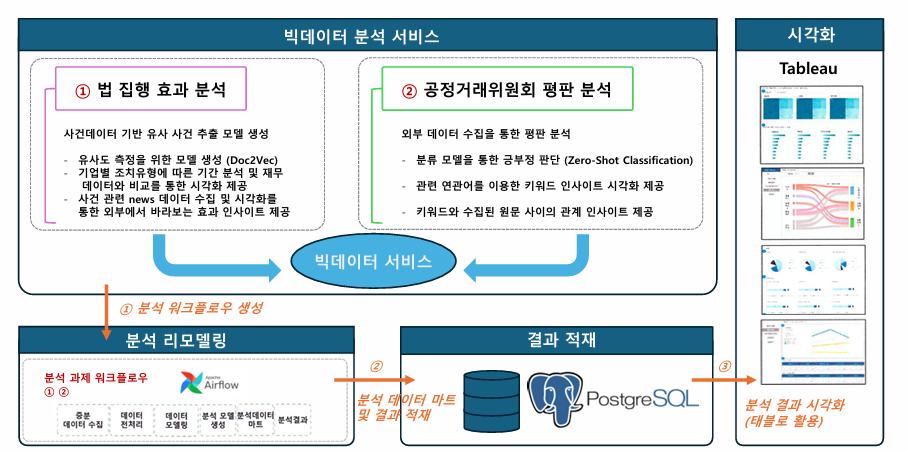
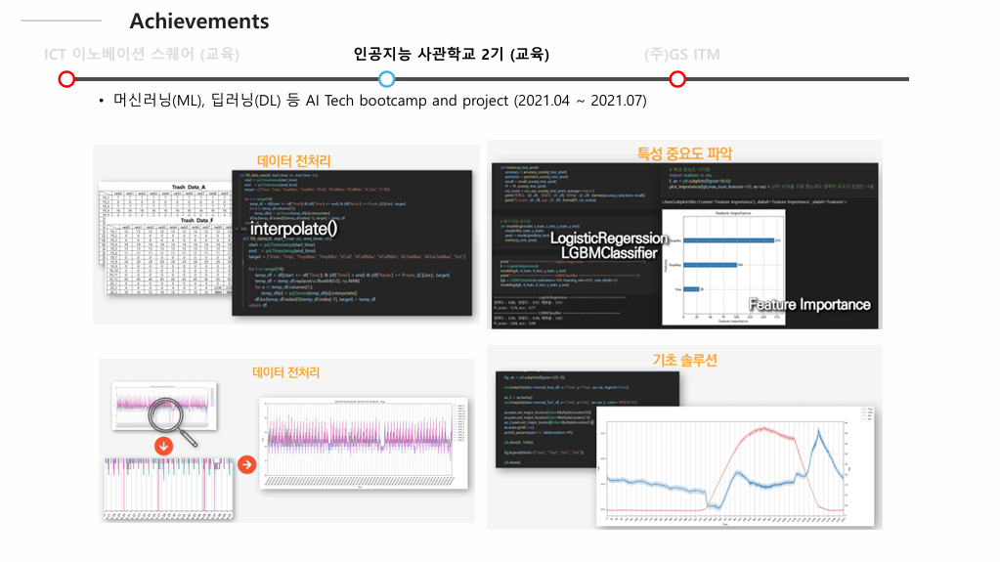
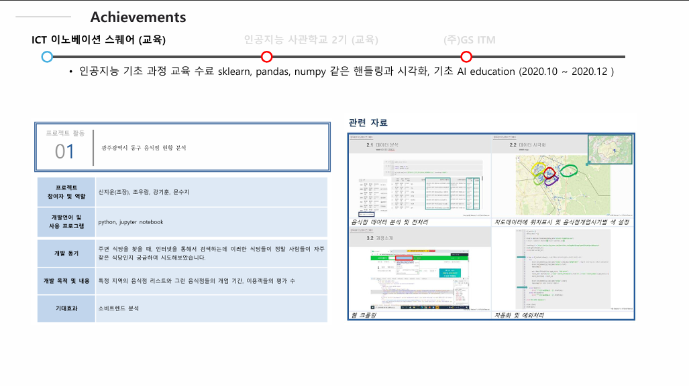
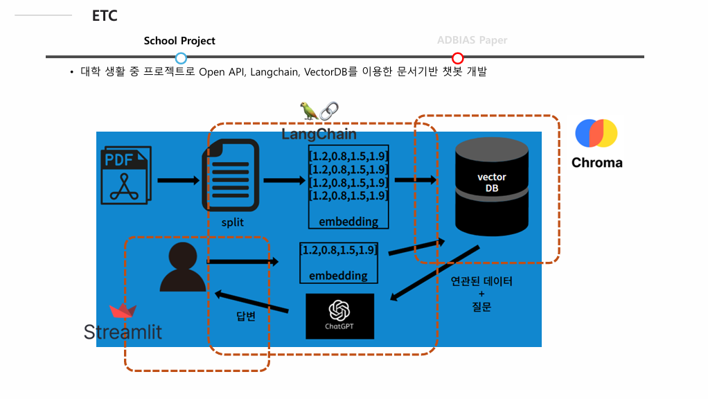

안녕하세요! 데이터 분석과 AI를 좋아하는 강기훈입니다. 다양한 프로젝트를 통해 인사이트를 도출하고, 코드를 통해 문제를 해결하는 것을 즐깁니다.
- 나이: 1997년생, 29세
🎯 관심사
- 데이터 시각화
- 분석모형 구축
- 머신러닝 & 딥러닝 모델 개발
- kaggle
- 요리 & 운동
🛠 기술 스택
| 카테고리 | 스택 |
|---|---|
| 언어 | Python SQL |
| 라이브러리 & 프레임워크 | Pandas NumPy scikit-learn TensorFlow Streamlit Langchain |
| 데이터베이스 | PostgreSQL MySQL |
| 개발환경 | Pycharm VScode Colab Zeppelin |
🚀 프로젝트
- 법 집행효과 분석 & 공정거래위원회 평판 분석 
- ESS 센서데이터 분석 
- 음식점 상권 분석 
- 문서기반 챗봇개발 
📄 Paper
ADBIAS
Adjusting Multi-LLM Biases via Trait-based Quantitative Analysis for Automated Essay Scoring (AES)
2025.03 ~ ARR 7월 사이클 진행 중
- Currently under review at ACL Rolling Review (ARR)
- 제 1 저자 (공동 1저자 총 5명)